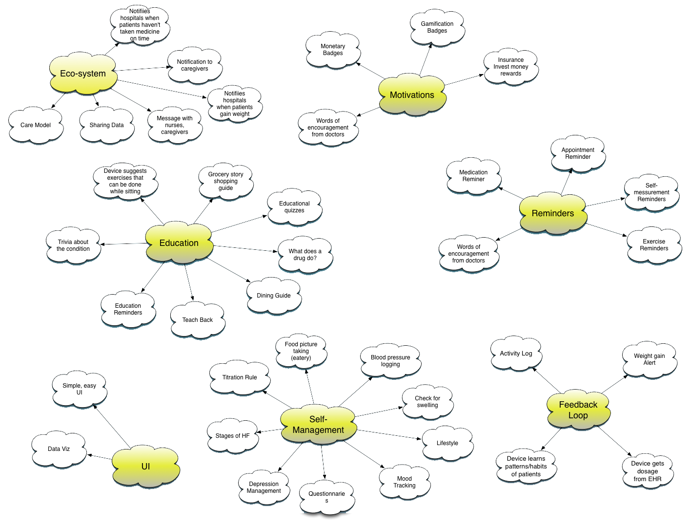
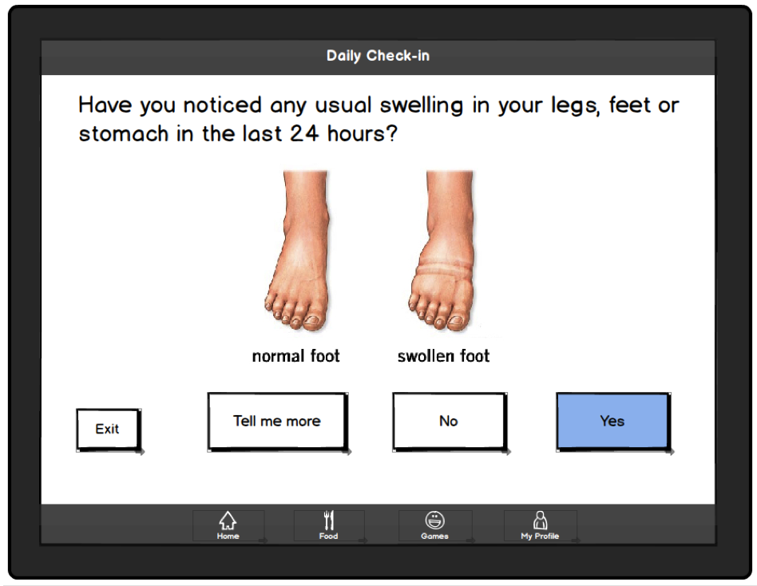

Research and Design
We conducted both secondary and primary research to understand more about heart failure as a condition itself, how it affects patients' day-to-day-life, and how it can be mitigated. Based on the research findings we kicked off our design process.

Iterations and Features
Through usability testing we refined and iterated on our low-fidelity prototypes.

Product Prototype
Our interactive prototype is a cross-platform application developed with HTML, CSS, JavaScript and PhoneGap. Because you are viewing the prototype in your web browser, some native notifications would not work. Our prototype is centered around our main persona, Gertrude.